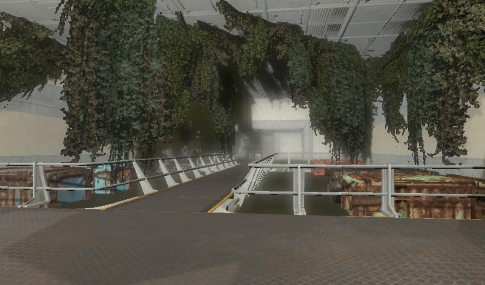

Gallery of My Fallout Mods



Fallout has always been a source of inspiration for my creative endeavors. As a passionate game designer and modder, I have spent countless hours developing new content, mechanics, and narratives that enrich the Fallout universe. From simple quality-of-life improvements to fully-fledged quests and locations, my Fallout mods aim to expand the immersive experience while staying true to the series' beloved lore.
In this ambitious project, I created a massive mod that added a whole new region to the Fallout world. "Wastelands" introduces players to a desolate, uncharted area filled with new quests, characters, and hidden secrets. The mod also includes enhanced combat mechanics and new survival features, offering a fresh challenge to seasoned Fallout players.
As a dedicated fan of Fallout's post-apocalyptic aesthetic, I developed a series of custom weapon and armor packs. These mods bring unique, lore-friendly gear to the wasteland, designed to blend seamlessly with the base game. My designs focus on player customization, offering different playstyles and tactical advantages.
Storytelling is at the core of any great Fallout experience. My quest mods introduce new stories and dialogue options that immerse players in moral dilemmas and branching narratives. One of my most popular mods includes "Shadows of the Wasteland," a story-driven quest that explores the darker side of post-apocalyptic survival.
My Fallout modding journey wouldn't have been possible without mastering the Bethesda Creation Engine. I have extensive experience in using the Creation Kit, scripting with Papyrus, and 3D modeling in Blender to bring my mods to life. Each mod reflects my dedication to maintaining Fallout's signature atmosphere while pushing the boundaries of what's possible in the game.
Over the years, my mods have garnered thousands of downloads from the Fallout modding community. I actively contribute to forums and social media, offering tutorials and advice to aspiring modders. My goal is to inspire others to create, innovate, and add their own unique mark to the Fallout universe.